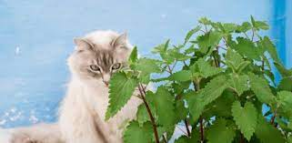
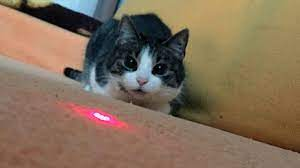
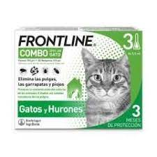
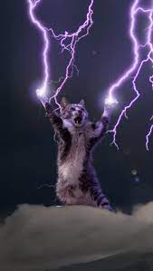
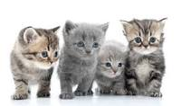

Imágenes de Gatos:
Haz click aquí para ver más imágenes de gatos.

Listas de Gatos
Cosas que los gatos aman:
- Menta gatuna:La menta de gatos contiene vitaminas, minerales, aceites esenciales, y sobre todo, una sustancia llamada nepelactona. 
- Apuntadores Láser: Internet está repleto de vídeos en los que observamos cómo los gatos persiguen la luz de un puntero láser en su intento por cazarla. 
Lasaña:Este gato es perezoso, gordo y le encanta la lasaña. Garfield vive la vida en sus términos, que incluyen burlarse de su dueño y atormentar a Odie, el perro.

Cosas que los gatos odian:
- Tratamientos antipulgas: El aseo no es únicamente ponerlo guapo: retiras pelo muerto, mantienes su pelaje y piel. Descubre como ayudar a tu gato a estar en su mejor forma. 
- Truenos: No es raro que un gato tenga miedo a los ruidos fuertes, especialmente los truenos y los fuegos artificiales. 
- Otros gatos: mejor tener a los gatos separados, con espacios diferenciados para comer y hacer sus necesidades. 